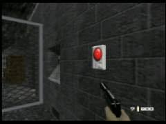
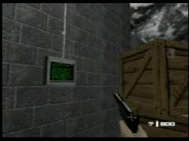
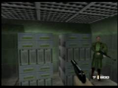
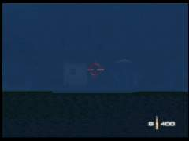
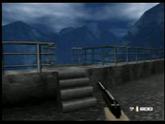

Ce Premier Niveau est assez simple, puisque linéaire. Les Gardes ne sont pas planqués dans des Endroits Vicieux, et les Objectifs ne sont pas super coriaces, excepté le Couloir de la Mort dans le Barrage lui-meme. Dans la Première Tour, vous trouverez le Fameux Sniper Rifle, qui vous aidera a vous débarasser des Gardes plus loin dans le Tunnel. Un Coup dans la Tête et hop on continue tranquille. Attention aux 2 Gardes planqués dans le Petit Bunker, qui peuvent etre lourds en 00 Agent par exemple. A part çà, rien de bien dur dans la Première Partie du Niveau, qui s'achève à la Grande Porte qu'il vous faut ouvrir pour continuer. Pas bien difficile jusque là ! Il y a un Gilet dans la 2ème Tour depuis le Début du Niveau en Agent. En Secret Agent, il se trouve dans la 3eme Tour, juste après la Double Porte quoi. Après, c'est là que les Choses se gatent, et que vous devez remplir des Objectifs.

Les Alarmes : Secret Agent / 00 Agent
Il y en a 4, et la 1ere est bien voyante. Abattez vite le Garde en Vert avant qu'il ne l'active. C'est le seul moment stressant ou vous risquez de foirer cet Objectif. Vous trouverez les 3 autres Alarmes dans chacune des Tourelles bordant le Barrage.



Le Modem : 00 Agent
Pas de problèmes pour cet Objectif. L'endroit où il faut le placer, c'est la Barraque avec le Radar dessus, c'est à dire la meme chose que là ou il y a la 1ere Alarme.
Note - si vous regardez au Sol, vous verrez une Salle en-dessous de vous. C'est la Salle ou on remplit l'Objectif suivant. Au fait, si vous n'installez pas le Modem, vous ne pourrez pas remplir l'Objectif qui suit !!

Le Data Backup : 00 Agent
C'est là que ça devient Chaud. Vous constaterez que l'on peut acceder par chacunes des Tourelles du Barrage, à un Couloir qui les relie toutes entre elles. Ce Couloir mène à une Salle ou vous devrez cliquer (Bouton Vert, tout simplement) un Gros Terminal. Le Problème est la traversée de ce Couloir. Il est bourré de Gardes qui ne viendront meme pas vers vous. Il vous shooteront de loin. Je vous conseille le Sniper Rifle evidemment !


Pour ceux qui visent bien et juste, on peut entrer dans le Couloir dès la 1ere Tourelle, mais il faut savoir que vous allez vous retrouver entre 2 Feux ! Soit vous commencez depuis le début (Dernière Tourelle) pour avoir l'Esprit tranquille, soit vous foncez et réussissez avec quelques blessures.





Saut à l'Elastique : Tous Niveaux
C'est l'Objectif commun à tous les Niveaux de Difficulté. Rendez-vous à la Plate-Forme et voilà, jetez-vous dans le Vide !

